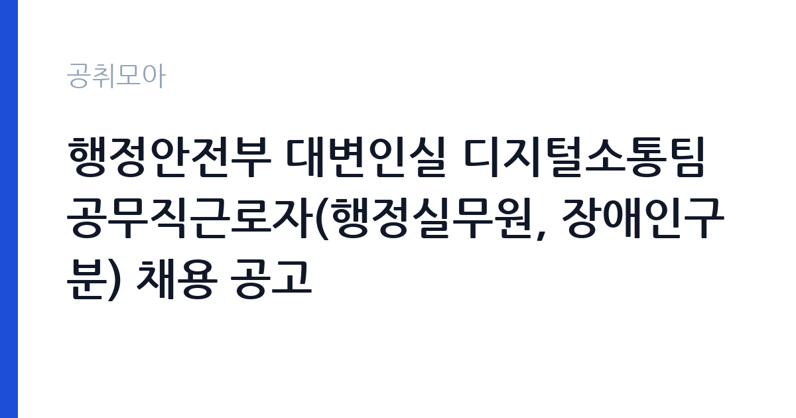

[국가기관] 행정안전부 대변인실 디지털소통팀 공무직근로자(행정실무원, 장애인구분) 채용 공고
행정안전부 대변인 디지털소통팀 · 세종 · 마감 2026-10-20 (D-12) · 출처 나라일터

한눈에 보는 모집 조건
| 기관 | 행정안전부 대변인 디지털소통팀 |
|---|---|
| 공고명 | 행정안전부 대변인실 디지털소통팀 공무직근로자(행정실무원, 장애인구분) 채용 공고 |
| 고용형태 | 공무직 |
| 근무지 | 세종 |
| 게시일 | 2026-10-08 |
| 마감일 | 2026-10-20 (D-12) |
지원자격, 이렇게 읽으세요
- 공무직(행정실무원) 1명
- 접수 ~2026-10-20 마감
- 세부 조건은 원문 공고문 확인
이번 채용은 장애인 구분 모집으로, 장애인 고용 촉진 차원에서 해당 요건을 충족하시는 분이 대상입니다. 채용 분야는 공무직근로자(행정실무원) 1명이며 학력과 연령 등 직무 외 제한은 공고문에서 확인하셔야 합니다. SNS 채널 운영과 보도 모니터링, 홍보 지원 업무를 수행하므로 디지털 콘텐츠와 소셜미디어에 대한 이해가 있으면 유리합니다. 원서 접수는 등기우편으로만 가능하며 10월 14일부터 10월 20일까지 도착분 기준인지 소인 기준인지 공고문에서 반드시 확인하십시오. 자세한 사항은 붙임 공고문을 확인해 달라는 것이 행안부의 안내입니다.
이 공고의 포인트
이 공고의 포인트는 중앙부처 대변인실의 디지털 소통 업무를 공무직으로 수행한다는 점입니다. 행안부 SNS와 소셜미디어기자단, 유튜브 채널 운영에 직접 참여하므로 공공 홍보와 디지털 콘텐츠 실무 경험을 쌓기에 좋은 자리입니다. 공무직은 무기계약 성격으로 정년까지 근무할 수 있어 안정성이 높습니다. 세종 근무이지만 중앙부처 경력은 이후 다른 공공기관 홍보·소통 직무로 이직할 때 강점이 됩니다. 장애인 구분 모집이라 해당 요건 충족자에게는 경쟁 부담이 상대적으로 낮은 공고이기도 합니다. 홍보와 미디어 분야 취업을 준비하시는 분께 실무 이력을 만들 절호의 기회입니다.
전형은 어떻게 진행되나
전형 절차는 1차 서류심사와 2차 면접시험으로 구성됩니다. 과거 행안부 대변인실 공무직 채용(안전소통담당관 행정실무원 등)도 동일한 서류·면접 구조였으며 필기시험은 없습니다. 서류심사에서는 지원자격 충족 여부와 직무 연관 경험, 자기소개서를 평가합니다. 면접시험은 직무 이해도와 소통 역량, 조직 적응력을 확인하는 방식으로 진행될 가능성이 큽니다. 원서 접수 기간은 2026년 10월 14일부터 10월 20일까지이며 등기우편 접수만 가능합니다. 접수 시작일이 10월 14일이므로 그 전에 서류를 모두 갖춰 두시는 것이 좋습니다.
원문에서 확인한 전형 방식
행정안전부 대변인실 디지털소통팀에서 공무직근로자(행정실무원, 장애인 구분) 채용을 다음과 같이 공고하오니 많은 응시 바랍니다. ○ 채용분야 및 인원 : 공무직근로자(장애인 구분) / 1명 ○ 담당직무 : 행안부 SNS채널 및 소셜미디어기자단 운영, 언론보도 모니터링, 행안부 유튜버 활동 지원, 기타 언론홍보 지원 ○ 전형절차 : 1차 서류심사, 2차 면접시험 ○ 원서접수기간 : 2026. 10. 14.(수) ~ 10. 20.(화 ) ○ 원서접수방법 : 등기우편접수 * 자세한 사항은 붙임 공고문을 확인해 주시기 바랍니다.
이런 분께 추천해요
- SNS 채널 운영과 콘텐츠 기획, 홍보 업무에 관심이 있고 실무 경험을 쌓고 싶으신 분께 추천합니다.
- 장애인 구분 요건을 충족하시며 중앙부처에서 안정적으로 근무하고 싶으신 분께 적합합니다.
- 세종 근무가 가능하고 공공 홍보와 디지털 소통 분야로 커리어를 이어가고 싶으신 분께 좋은 기회입니다.
지원 전 체크리스트
- 장애인 구분 모집의 증빙 서류(장애인증명서 등)를 미리 발급받아 두십시오. 서류 미비는 탈락 사유가 됩니다.
- 등기우편 접수이므로 발송 일정을 역산해 최소 사흘 전에 우체국에서 발송하십시오. 도착분 기준인지 소인 기준인지 공고문에서 확인하십시오.
- 자기소개서에는 SNS 운영이나 콘텐츠 제작, 모니터링 경험을 구체적으로 기술하십시오.
- 행안부 유튜브와 SNS 채널, 소셜미디어기자단 활동을 사전에 살펴보고 지원 동기와 연결하십시오.
모집 일정과 제출 타이밍
원서 접수 기간은 2026년 10월 14일부터 10월 20일까지입니다. 등기우편 접수만 가능하므로 10월 17일 이전 발송을 권장합니다. 서류심사 결과 발표와 면접 일정은 접수 마감 이후 행안부 홈페이지 채용 게시판에 공지됩니다. 면접은 마감 후 1~2주 이내에 실시되는 것이 중앙부처 공무직 채용의 일반적인 흐름입니다. 접수 이후에는 행안부 공지사항을 주기적으로 확인하시고 연락 가능한 전화번호를 유지하십시오.
직무 이해하기: 국가기관
디지털소통팀 행정실무원은 행안부 SNS 채널 운영 지원과 소셜미디어기자단 관리, 언론보도 모니터링, 유튜브 활동 지원을 담당합니다. 행안부 디지털소통팀은 정책 콘텐츠 기획과 대국민 소통을 전담하는 부서로, 한시임기제 디지털소통 콘텐츠 기획 인력도 함께 운영하는 등 디지털 홍보에 힘을 싣고 있습니다. 실무자는 게시물 일정 관리와 댓글 응대, 보도 내용 정리, 촬영과 편집 지원 등 현장 업무를 수행합니다. 정책 홍보의 최전선에서 일하므로 공공 커뮤니케이션 역량을 키우기에 좋은 환경입니다.
자기소개서 작성 팁
자기소개서에서는 디지털 소통 관련 경험을 중심으로 기술하십시오. SNS 계정 운영과 카드뉴스 제작, 영상 편집, 커뮤니티 관리 경험이 있다면 수치(팔로워 증가, 게시물 수)와 함께 제시하시는 편이 설득력이 있습니다. 행정실무원으로서의 문서 작성과 일정 관리 능력도 함께 어필하십시오. 행안부의 정책과 대국민 소통의 의미를 언급하며 공공 홍보에 기여하고 싶다는 동기를 담으시면 좋습니다. 장애인 구분 모집이므로 본인의 강점과 직무 수행 의지를 자신 있게 표현하십시오.
면접 준비 포인트
면접에서는 직무 이해도와 소통 역량, 성실성을 확인합니다. 행안부 SNS와 유튜브에서 인상 깊었던 콘텐츠를 하나 꼽아 의견을 말할 수 있도록 준비하십시오. 보도 모니터링 업무의 의미를 묻는 질문에는 정확성과 신속성의 균형을 강조하시는 편이 좋습니다. 공무직으로서 장기 근무 의지와 조직 적응력에 대한 질문도 예상되므로 세종 근무와 팀 협업에 대한 생각을 정리해 두십시오. 답변은 간결하게, 태도는 밝고 단정하게 하시길 권장합니다.
급여·근무조건 읽는 법
보수는 행안부 공무직 보수 규정에 따라 책정되며, 정확한 금액은 첨부 공고문의 보수표에서 확인하셔야 합니다. 중앙부처 공무직의 보수는 일반적으로 최저임금 연동 기본급에 정액급식비와 명절상여금, 복지포인트, 법정수당이 더해지는 구조로, 행안부 공무직 운영규정(훈령)에 따라 지급됩니다. 본 공고의 excerpt에는 보수표가 포함되어 있지 않으므로 원문에서 확인하시기 바랍니다. 경쟁률과 합격선도 공개되지 않았으니 공고문과 행안부 채용 게시판을 참고하십시오.
자주 묻는 질문
- 장애인 구분 모집이란 무엇입니까?
장애인 고용 촉진을 위해 응시 자격을 장애인으로 한정하는 모집 방식입니다. 장애인증명서 등 증빙 서류 제출이 필요하며, 세부 요건과 인정 범위는 첨부 공고문에서 확인하십시오. - 접수는 방문이나 온라인으로 가능합니까?
이번 채용은 등기우편 접수만 가능합니다. 방문과 온라인 접수는 운영되지 않으니 접수 기간(10월 14일~20일) 안에 등기가 도착하도록 발송 일정을 조정하십시오. - 행정실무원의 주요 업무는 무엇입니까?
행안부 SNS 채널과 소셜미디어기자단 운영 지원, 언론보도 모니터링, 유튜브 활동 지원과 기타 언론홍보 지원 업무를 담당합니다. 콘텐츠 기획보다는 운영과 지원 실무가 중심입니다.
함께 보면 좋은 공고
[국가기관] 26년 서초경찰서 무기계약직 근로자[시설관리] 채용 공고문[제 2026-4호] — 마감 2026-10-19[국가기관] 2026년 제8회 국립공주대학교 대학회계직원 채용 공고 — 마감 2026-10-15[국가기관] 2026년 제5회 국립정신건강센터 직원채용 공고(공무직근로자) [조리원, 연구원] — 마감 2026-10-16출처: 나라일터 공개정보를 바탕으로 공취모아가 정리한 안내글입니다. 모집 조건·일정은 변경될 수 있으니 지원 전 반드시 원문 공고문을 확인하세요. 본 글은 정보 제공용이며 합격을 보장하지 않습니다.